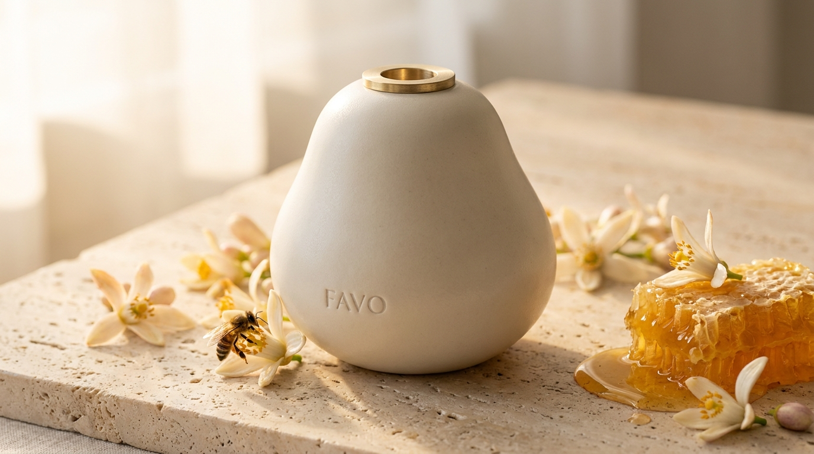
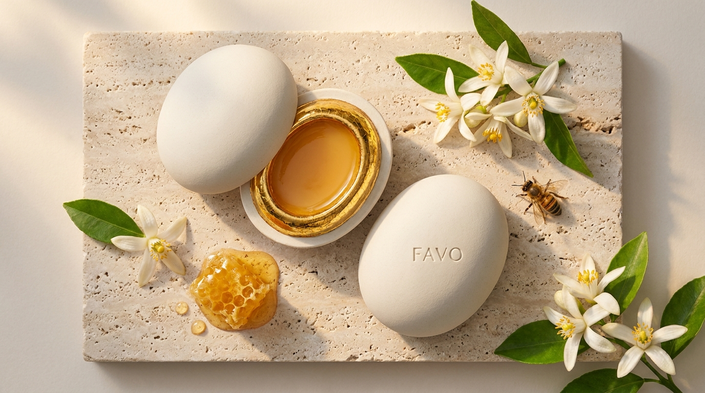
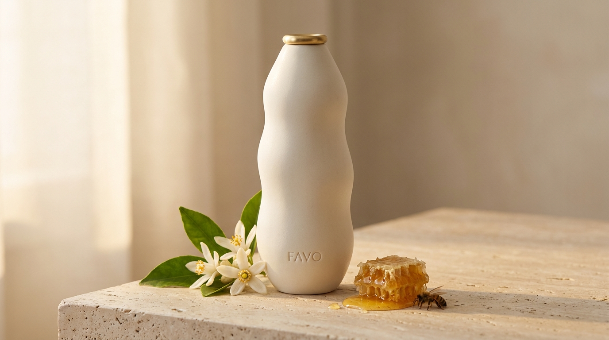
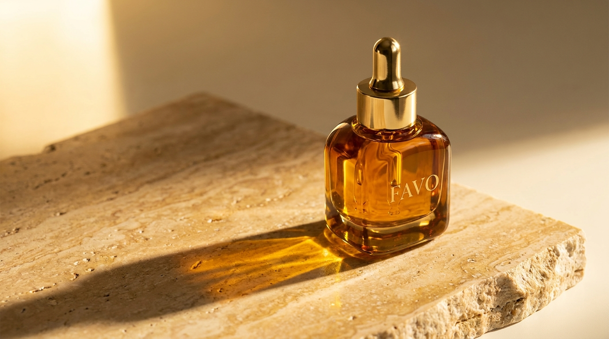
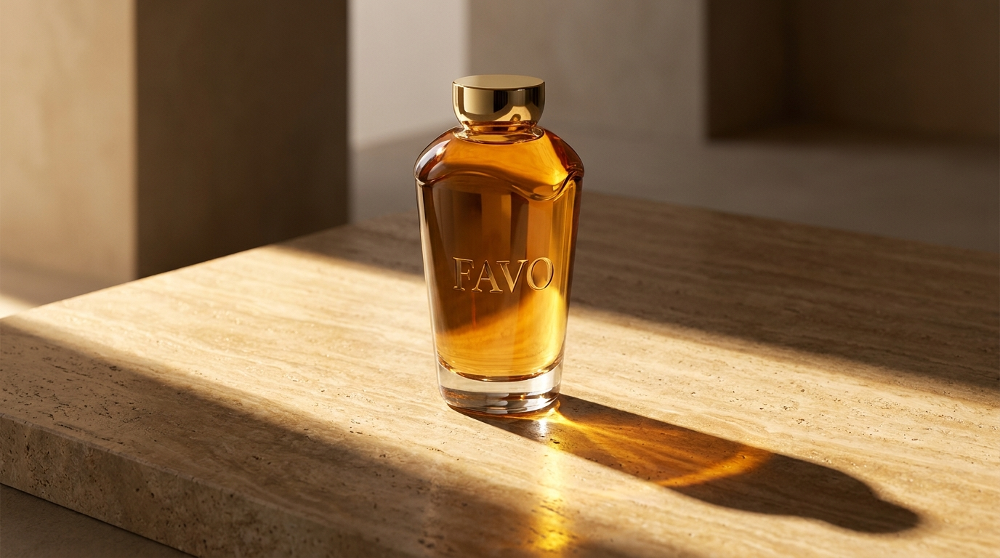

Favo I
A Gota
óleo capilar — 30 ml
Para as pontas, depois do banho. Mel silvestre polifloral e óleo de buriti em base leve. Frasco em cerâmica fosca com anel de latão escovado.
cosmética de origem.
mel de agrofloresta em formação.
A primeira coleção da maison BUSCH & MELO. Cinco peças esculpidas à mão, reunidas em torno de um mesmo ingrediente: o nosso mel.

óleo capilar — 30 ml
Para as pontas, depois do banho. Mel silvestre polifloral e óleo de buriti em base leve. Frasco em cerâmica fosca com anel de latão escovado.
bálsamo labial — 12 g
Bálsamo denso de mel e própolis verde, com leve brilho natural. Porcelana vitrificada, interior em ouro craquelê. Cápsula de refil a cada recompra.


óleo corporal — 100 ml
Óleo corporal de mel de laranjeira, pracaxi e flor de laranjeira de Limeira. Textura seca que absorve sem deixar rastro. Frasco em cerâmica alta, finalizado com anel em latão.
óleo facial — 30 ml
Sérum facial concentrado em mel raro, própolis e ativos botânicos. Três gotas à noite, sobre a pele limpa. Vidro âmbar maciço, pipeta com bulbo em latão polido.


perfume capilar — 75 ml
Perfume para os cabelos. Notas de mel, flor de laranjeira e madeira clara, que se revelam com o calor da pele. Vidro âmbar talhado e tampa maciça em latão polido.
BUSCH & MELO nasce em Limeira, fundada por duas sócias em torno de uma agrofloresta em formação. Cada coleção parte de um ingrediente da terra. A primeira é o mel. Rastreável, raro, real.
Deixe seu e-mail para receber acesso antecipado quando a Coleção Favo abrir.